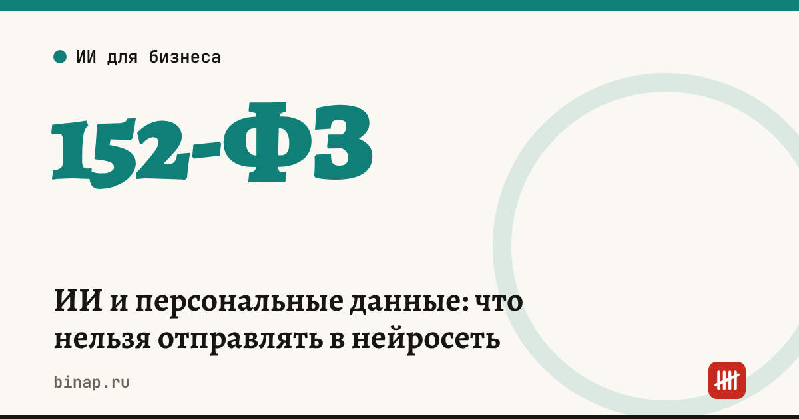

ИИ и персональные данные: что нельзя отправлять в нейросеть

В нейросеть нельзя отправлять персональные данные клиентов и сотрудников — ФИО, телефоны, адреса, паспорта, сведения о здоровье — без законного основания: по закону о персональных данных (152-ФЗ) вы как оператор обязаны не раскрывать их третьим лицам без согласия человека. Безопасный способ — обезличить запрос: заменить имена и реквизиты условными метками.
Коротко
- Персональные данные по 152-ФЗ — любая информация, относящаяся к прямо или косвенно определённому или определяемому человеку.
- ИП и компания, которые собирают данные клиентов, — оператор; вставить данные в чат-бот — это тоже обработка.
- Если сервис зарубежный, это может быть трансграничная передача: по ст. 12 152-ФЗ о ней нужно заранее уведомить Роскомнадзор.
- По данным «Коммерсанта», МВД 08.11.2026 предупредило: около 96% записей памяти ChatGPT система создаёт сама, 91% содержат персональные данные.
- Обезличенный запрос — тот, по которому без дополнительной информации нельзя понять, о ком речь.
Сроки, изменения и разборы для ИП и самозанятых — каждое утро в Telegram и MAX. Подпишитесь, чтобы не пропустить.
Что говорит закон
| Статья 152-ФЗ | Что значит для работы с нейросетью |
|---|---|
| Ст. 3 | обработка — любое действие с данными: сбор, запись, хранение, передача. Вставить данные в чат — тоже обработка |
| Ст. 7 | оператор обязан не раскрывать данные третьим лицам и не распространять их без согласия человека, если закон не говорит иное |
| Ст. 12 | передача данных иностранному лицу — трансграничная: до её начала оператор уведомляет Роскомнадзор |
Типичная ситуация: менеджер копирует в нейросеть переписку с клиентом, чтобы получить вежливый ответ, или бухгалтер загружает ведомость, чтобы найти ошибку. В обоих случаях в чужой сервис уходят чужие персональные данные.
Что добавляет память нейросетей. Исследование The Algorithmic Self-Portrait, на которое сослалось МВД, показало: память ChatGPT в основном пополняет сама система. Отдельный риск — ложные инструкции, спрятанные в загружаемых документах: они могут повлиять на память и следующие ответы.
Чек-лист: что нельзя отправлять
- ФИО, телефоны, email и адреса клиентов и сотрудников;
- паспортные данные, СНИЛС, ИНН физлиц;
- сведения о здоровье, больничные, данные о детях;
- зарплатные ведомости и банковские реквизиты физлиц;
- договоры и переписку, где есть всё перечисленное выше;
- коммерческую тайну: закупочные цены, условия с поставщиками, базы клиентов.
Что сделать сейчас
- Замените данные метками до отправки: «Клиент А», «Сотрудник 1», «[телефон]», «[сумма]».
- Отключите память или персонализацию в настройках сервиса либо используйте временный чат.
- Не загружайте служебные документы целиком: вырежьте нужный фрагмент и обезличьте его.
- Запишите правило для сотрудников одним абзацем: что можно и что нельзя отправлять в нейросеть.
- Если нужно обрабатывать данные клиентов в ИИ-сервисе — обсудите с юристом основание обработки, согласие и, для зарубежного сервиса, уведомление о трансграничной передаче.
Запрос для обезличивания (сначала прогоните текст через него, потом — основной запрос):
«Замени в тексте ниже все имена, фамилии, телефоны, email, адреса, номера документов и реквизиты на метки вида [Клиент 1], [телефон 1], [адрес 1]. Ничего больше не меняй и выведи список замен отдельно, чтобы я мог вернуть данные обратно. Текст: [вставьте текст]»
Важно: этот запрос сам по себе передаёт текст сервису. Если в тексте паспортные данные или сведения о здоровье, обезличивайте вручную.
ИИ-сервис для бизнеса с настройками приватности: ссылка
Как писать запросы, чтобы ответ был полезным, — 7 правил запросов. Какие задачи можно отдать нейросети — 10 задач для малого бизнеса. Готовые инструкции с правилами про данные — ИИ-агенты для бизнеса.
Частые вопросы
Можно ли отправить в нейросеть отзыв клиента, чтобы составить ответ? Да, если убрать имя, телефон и детали заказа, по которым клиента можно узнать.
Если имя заменено псевдонимом — данные обезличены? Не всегда: совокупность деталей облегчает идентификацию. Убирайте и сочетания признаков — должность, город, дату заказа.
Российский сервис безопаснее? Трансграничной передачи в этом случае может не быть, но обязанность не раскрывать данные третьим лицам без согласия остаётся.